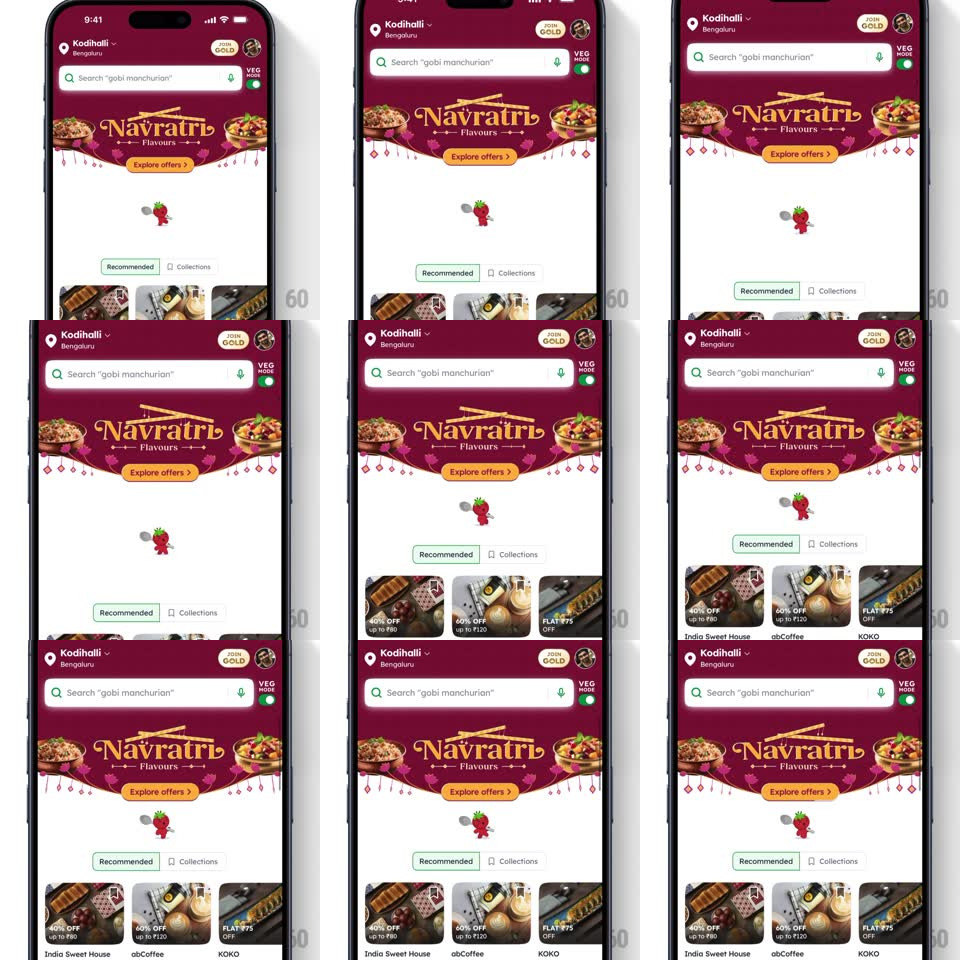

Media
Frame-by-frame

Rebuild this interaction 1:1: Zomato's pull-to-refresh mascot - pulling down the festive home feed reveals a strawberry mascot tossing a spoon in the gap under the banner, juggling it while the refresh runs, then dropping away as content reloads.

Rebuild this interaction 1:1: Zomato's pull-to-refresh mascot - pulling down the festive home feed reveals a strawberry mascot tossing a spoon in the gap under the banner, juggling it while the refresh runs, then dropping away as content reloads. ## Integration Integration: stack-agnostic spec - springs given as stiffness/damping, timed motions as duration + curve; map every value to your framework and animation library of choice. ## Scene The maroon Navratri-themed Zomato home (Kodihalli location, search "gobi manchurian", VEG MODE toggle, "Navratri Flavours" banner with Explore offers, Recommended/Collections tabs, offer cards for India Sweet House, abCoffee, KOKO). The mascot - a small strawberry character with a spoon - appears in the pull gap above the content. ## Motion spec Pattern: character pull-to-refresh. - Pull down: content follows the finger (1:1 with rubber-band resistance); the mascot rises into the gap from below the banner (scale 0.5 -> 1 with distance), spoon in hand. - Past the threshold (~90pt), release: content springs down to a holding inset and the mascot performs - it tosses the spoon upward, the spoon flips end over end (rotate 360deg per ~500ms loop), and the mascot juggles/bounces (translateY +/- 6pt) catching it each cycle. - On data ready: the mascot does a happy hop (squash and stretch, 300ms), then drops away below (translateY + fade, 250ms) as the content springs back up over it. - Released early: the mascot sinks back down without the juggle. ## Calibration - The juggle loop is tight (~500ms) so even fast refreshes show one full spoon flip. - The mascot is small (~48pt) and centered - a delight, not a spinner replacement for slow loads (pair with skeletons on long loads). ## Reduced motion Static mascot during refresh; no toss. ## Don't miss - The mascot is themed to the banner season (Navratri palette) - it belongs to the artwork, not the chrome. - The spoon rotates around its own center, clearly flipping - not a wobble.